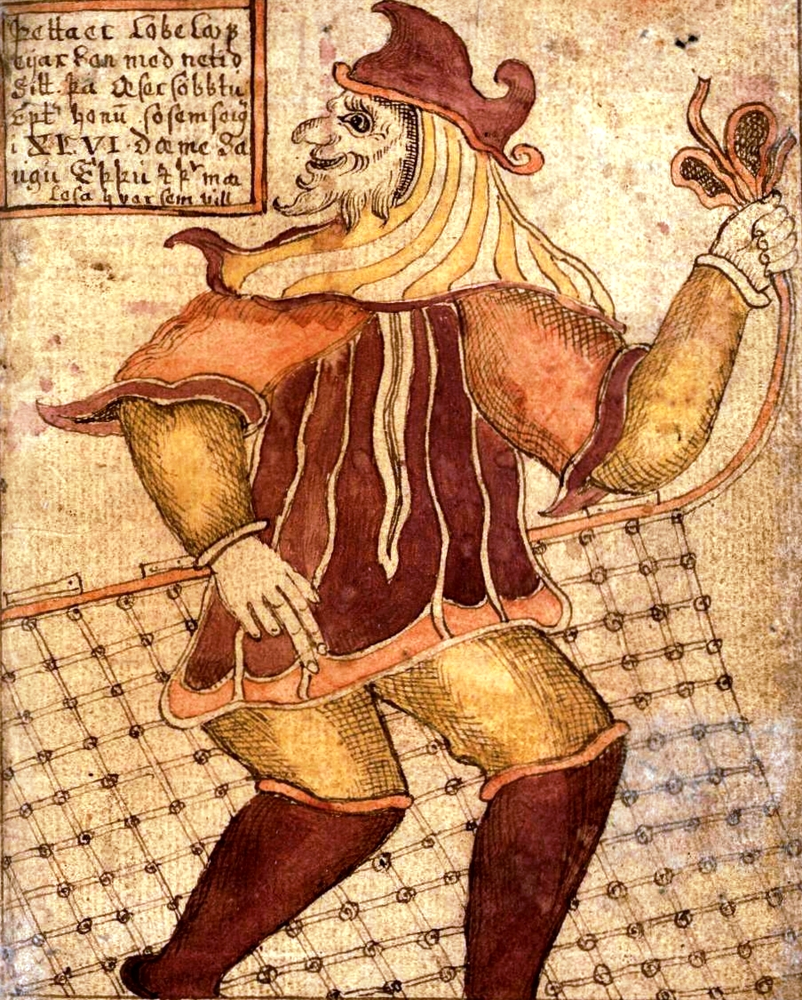

Balder
El dios predilecto, el favorito por más dulce hermoso y complaciente con los hombres, no sólo era el dios más venerado por los humanos, sino también era el hijo predilecto de Odin y de Frigg. Sus cualidades físicas no tenían fin, pues poseía unos rasgos de gran belleza de los que parecían brotar rayos de luz, sus cabellos eran de un blanco prístino.
Pero no sólo los dones físicos adornaban la figura del dios, también era considerado el más sabio y elocuente de los dioses. Habitaba en la morada celeste llamada Breidablik, en un lugar donde nada maligno o sucio podía entrar.
|
LokiEl hecho más luctuoso en el que participó fue la muerte de Balder. La asamblea de los dioses le castigó por su participación en el asesinato de Balder de la siguiente manera, le ataron a unas enormes rocas con las visceras de uno de sus hijos, y encima de su cabeza le colgaron una serpiente venenosa. Su mujer Sigyn recogía en una copa las gotas de veneno que continuamente caían sobre su cara, pero cuando se retiraba para vaciarla algunas de éstas caían sobre el dios, lo que provocaba que se retorciera con tan gran dolor que hasta la tierra temblaba.  |
Odin
Era el principal dios del panteón nórdico, sobre el que descansa el gobierno del mundo de los hombres y el de los dioses. Aunque no había creado el mundo, sí creó a la primera pareja de humanos, Ask y Embla. El inventor de las runas era conocido por su afición a la poesía, pero también era un dios eminentemente guerrero, ya que protegía a los valientes durante la lucha, guiándolos, para que murieran luchando y pudieran llegar al Valhalla. Este lugar se encontraba en Asgard y allí eran conducidos los guerreros que habían sufrido una muerte violenta por las valquirias.
|
Thor
|